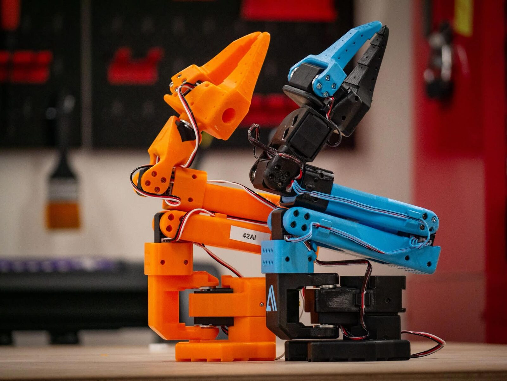
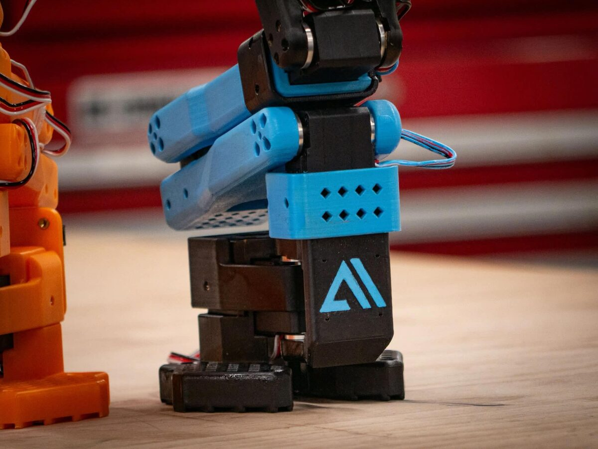

Autonomous Chess Robot
Teaching a SO-101 robotic arm to play chess: teleoperation, imitation-learning datasets, YOLO-based perception and an LLM agent for decision-making.

Context
The end goal is an autonomous chess game: a robot arm that perceives the board, decides on a move, and physically plays it against a human opponent. It's a 42AI team project, and this write-up covers where the project stands today, not a finished result.
Hardware
The arm is a SO-101 leader/follower pair, calibrated and teleoperated with LeRobot (Hugging Face). Teleoperation lets us record demonstration datasets by driving the follower arm through the leader arm, which is the raw material for the imitation-learning policies below. Onboard compute is an NVIDIA Jetson Orin NX, which I installed and configured to drive the arm.

Perception
The computer-vision module uses YOLO (Ultralytics) and OpenCV for camera calibration, scene reconstruction, and detection. The YOLO model is fine-tuned on a chess-pieces dataset, with live inference running on webcam input.
Learning
Movement policies are trained by imitation learning on the demonstration datasets recorded through teleoperation, rather than hand-coded motion planning.
Agent
Decision-making is architected as an LLM agent with LangGraph: modular perception / decision / action nodes, SQLite checkpointing for state persistence, streaming execution, and multi-provider support (Groq, OpenAI). The codebase is split into independent modules (agent / robot / vision / api / ui), with a Streamlit interface for control and visualization.
Status & next steps
Honestly: the robot does not yet play a full game. The current phase is about learning reliable movements and building out the demonstration dataset that the imitation-learning policies depend on. The perception and agent architecture are in place; the next milestone is connecting them end to end for a first full move cycle.